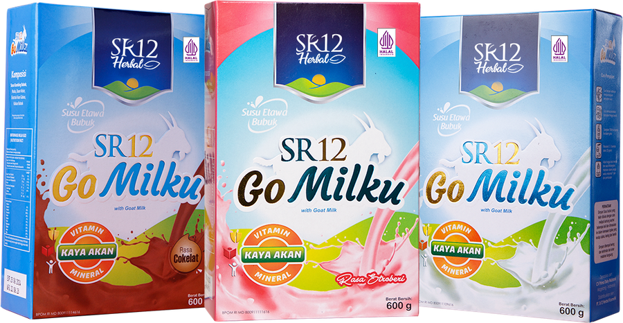

SR12 · Susu Etawa Bubuk
Nutrisi Etawa untuk
Setiap Generasi
Susu kambing peranakan etawa dari Magelang, Wonosobo, dan Sleman — diperkaya daun kelor, ekstrak ikan gabus, dan madu. Mudah dicerna, rendah laktosa, kaya vitamin dan mineral.
- Terdaftar BPOM RI MD
- Sertifikat Halal
- ±40% Susu Etawa

Varian Produk
Tiga Rasa, Satu Nutrisi
Formula inti yang sama pada setiap varian — yang berbeda hanya rasanya. Tersedia dalam sachet 25 g, kotak 200 g, dan 600 g.
Testimoni
Cerita dari Pengguna
Percakapan asli dari pengguna dan komunitas SR12. Klik untuk memperbesar.
Catatan penting: testimoni di atas merupakan pengalaman pribadi masing-masing individu dan hasilnya dapat berbeda pada setiap orang. SR12 Go Milku adalah produk pangan olahan, bukan obat, dan tidak dimaksudkan untuk mendiagnosis, mengobati, menyembuhkan, atau mencegah penyakit apa pun. Untuk kondisi medis tertentu, konsultasikan dengan dokter dan tetap jalankan terapi medis Anda.
Video Tenaga Ahli
Penjelasan Langsung dari Ahlinya
Empat penjelasan inti seputar kandungan, manfaat, dan cara konsumsi Go Milku. Video hanya dimuat saat Anda menekan putar.
Product Knowledge
Apa yang Sebenarnya Anda Minum
Seluruh data di bagian ini ditranskrip langsung dari dokumen Product Knowledge resmi SR12 Go Milku 2026.
01 Kandungan Utama
02 Informasi Nilai Gizi
Takaran saji 25 g · 8 sajian per kemasan 200 g · %AKG berdasarkan kebutuhan energi 2.150 kkal.
03 Susu Kambing vs Susu Sapi
| Aspek | Susu Kambing Etawa | Susu Sapi |
|---|
04 Cara Konsumsi & Reaksi Awal
Reaksi awal konsumsi
Masa adaptasi berbeda pada tiap orang. Untuk mengurangi risiko, mulailah 1× sehari selama 3 hari pertama dan diminum setelah makan.
Proses Produksi
Dari Kandang ke Kemasan
Enam tahap yang menjaga mutu susu etawa sejak diperah sampai tersegel di tangan Anda.
Tujuan Kami
Kenapa Go Milku Ada
Mulai Rutin Hari Ini
Tanyakan stok, harga reseller, dan varian favorit Anda. Dibalas cepat pada jam kerja.
Pesan Go Milku Sekarang